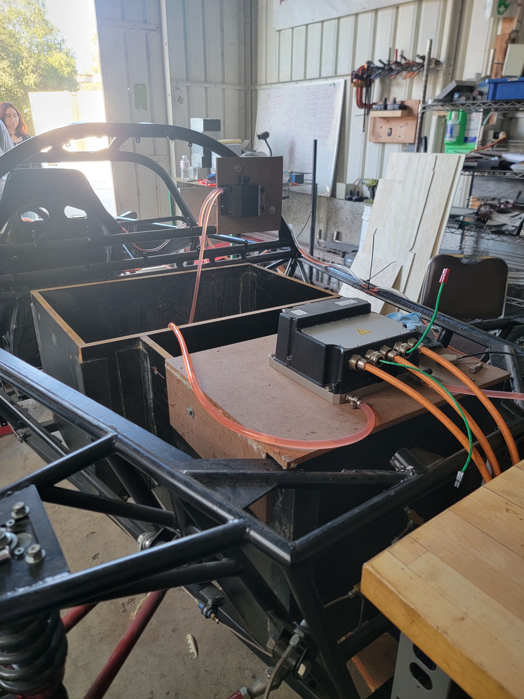
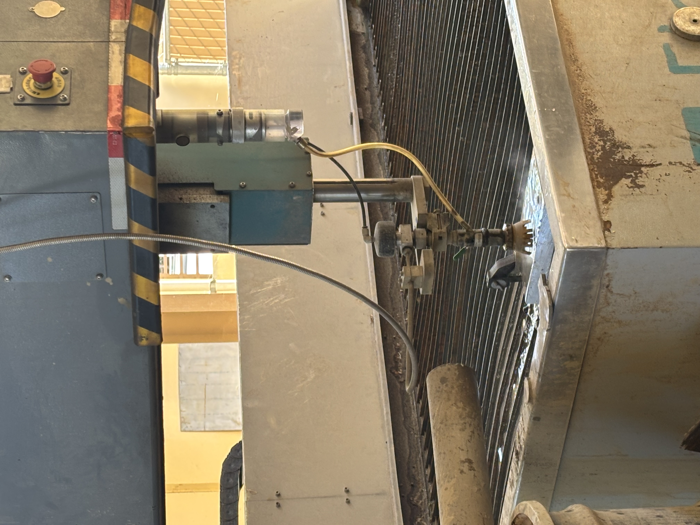
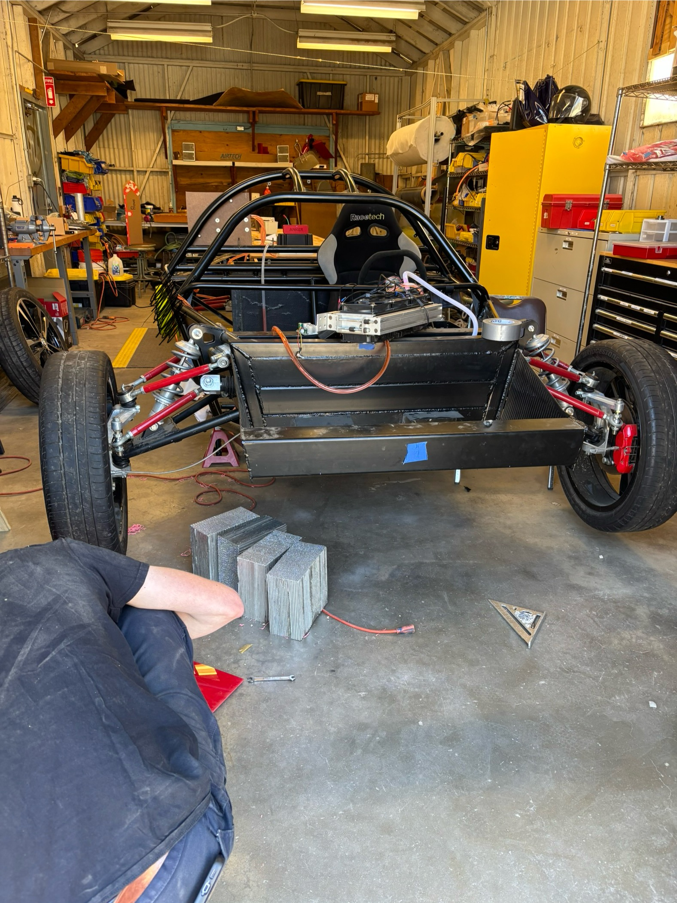

Project Mila Electric Vehicle
Project Mila is a long-term electric vehicle effort focused on building a hyper-efficient car capable of traveling 1,000+ miles on a single charge. My work included mechanical design, prototyping, manufacturing, and vehicle integration for drivetrain support, crash protection, and cooling system evaluation.
Motor / Inverter Mount
I designed a temporary inverter mounting system to support vehicle integration and early testing. The project began with detailed measurements of the battery box and available packaging space, followed by SolidWorks modeling to evaluate fitment. I selected the battery box lid as the most efficient temporary mounting location and fabricated a custom wood lid using saw cutting, drilled fastener holes, wood glue, and screws to create a stable mounting surface.

Wheel Spacer Design
I designed custom wheel spacers based on motor dimensions, wheel fitment, and required offsets. After modeling the spacer in SolidWorks, I 3D printed a prototype to verify fitment before manufacturing the final spacers from aluminum stock using a waterjet. I then finished the parts on a lathe to remove excess material, achieve final dimensions, and improve the surface finish.


Front Crash Structure
I assembled and installed a front crash structure to improve impact protection. This included removing the front radiator, installing honeycomb aluminum blocks for energy absorption, and cutting a PVC impact plate with a band saw to match the front geometry of the vehicle.

Cooling System Test Procedure
I researched EV powertrain cooling requirements and developed a test procedure to evaluate cooling-loop performance. The procedure outlined flow meter, pressure sensor, and temperature measurement placement; baseline testing at different pump speeds; leak checks; and data collection methods to identify inefficiencies and guide future cooling system design.